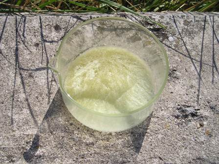
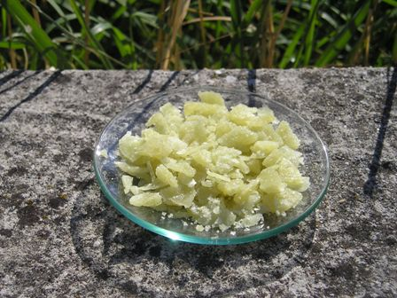

L'altra volta abbiamo preparato l'acido cinnamico: che ce ne facciamo? Andiamo subito a sacrificarne un po' per una nobile causa!
La sintesi di oggi è dedicata agli appassionati (come il sottoscritto) degli esteri odorosi, e produrrà un buon composto, un estere proprio da non perdere!
L'acido cinnamico si esterifica (vuol dire che si combina con gli alcoli) senza problemi e con ottima resa se gli alcoli stessi sono il metilico o l'etilico; la procedura che segue lo dimostra e non è difficile, portando ad un prodotto puro, o almeno di purezza perfettamente adeguata ai nostri scopi.
Materiale occorrente:
- acido cinnamico
- metanolo
- H2SO4
- etere
- allhin e vetreria opporuna
- piastra riscaldante

- In un palloncino da 100 ml introdurre 12 g di acido cinnamico e 33 ml di metanolo; aggiungere lentamente agitando 1,5 ml di H2SO4 conc.- Predisporre per il riscaldamento a ricadere con il sistema più opportuno (io uso il bagno a sabbia) e mantenere a lento riflusso per cinque ore.
Il liquido leggermente giallino bolle tranquillamente a temp. sotto i 100° - Trascorso il tempo, togliere l'allhin e continuare il riscaldamento per un po', fino ad eliminare quasi del tutto il metanolo in eccesso non reagito. Raffreddare e versare il residuo (circa 20 ml) in 100 ml di acqua, aggiungere 60 ml di etere e mescolare; il cinnamato si scioglie facilmente nell'etere e si separa con facilità per mezzo di un imbuto separatore. Scartare la parte acquosa pesante e lavare perfettamente la fase organica prima con acqua e bicarbonato e poi con acqua pura, separando ogni volta.
Essicare con CaCl2 o altro disidratante fino ad ottenere una soluzione limpida (leggermente giallina).
Mettere in un cristallizzatore e lasciar evaporare una notte l'etere.

Si ottiene il cinnamato di metile sotto forma di una massa cristallina raggiata, di colore giallino molto chiaro, facilmente fusibile (32-36°).Un cristallino fonde immediatamente se preso fra le dita, lasciando un persistente delizioso profumo che definirei balsamico fruttato, difficile da descrivere e immaginare (è sempre molto soggettivo); ricorda le note di fragola e basilico o di qualche frutto esotico che non so definire.
Curiosità: dopo aver sentito il profumo dell'estere durante la sintesi ed averne ormai ben memorizzato l'olezzo, l'ho individuato chiaramente fra i componenti della profumazione di uno shampoo che ho trovato recentemente... tutto sommato ne basta una traccia per sentirlo!
